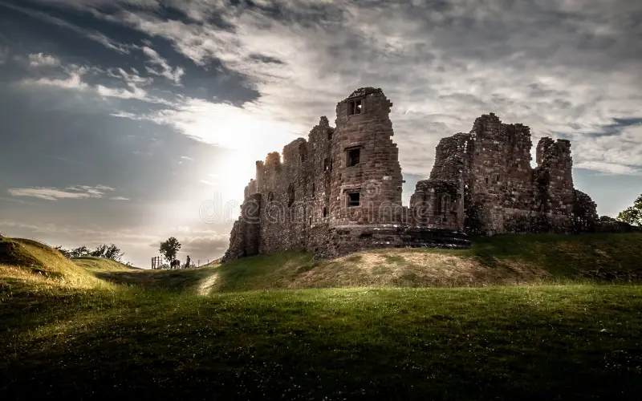
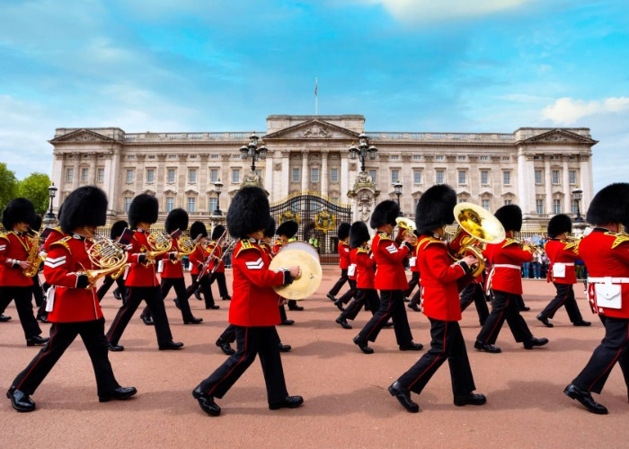

CULTURAL PILLARS
What Makes England, England

HISTORY
Rich History
From ancient Roman walls and royal dynasties to empires, England's past is etched deeply into the modern world.
EXPLORE →
CULTURE
Unique Culture
The birthplace of Shakespeare, iconic pub traditions, literature, and music movements that influenced generations.
EXPLORE →
CUISINE
Traditional Cuisine
Fish & chips, Sunday roast, and afternoon tea — historical hearty dishes that bring pure comfort and warmth.
EXPLORE →LANDMARKS
Iconic Landmarks
From the majestic Big Ben to the ancient mystery of Stonehenge, explore structural marvels standing through time.
EXPLORE →